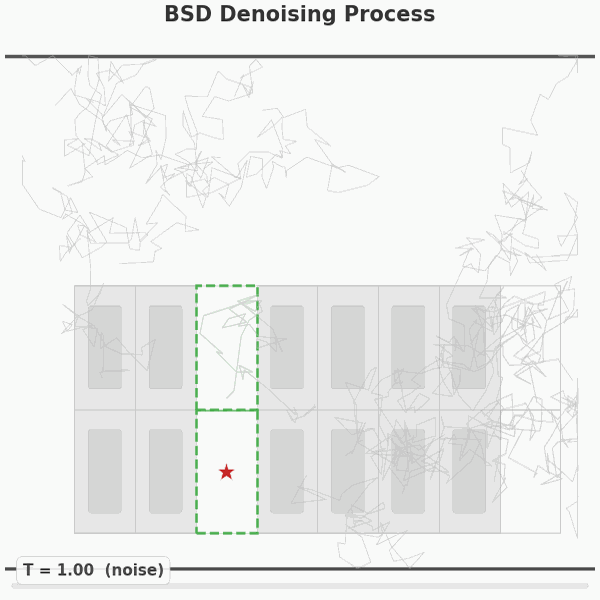
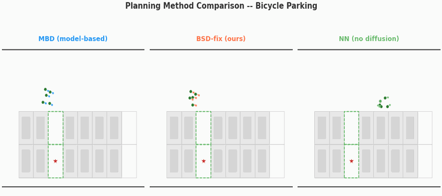
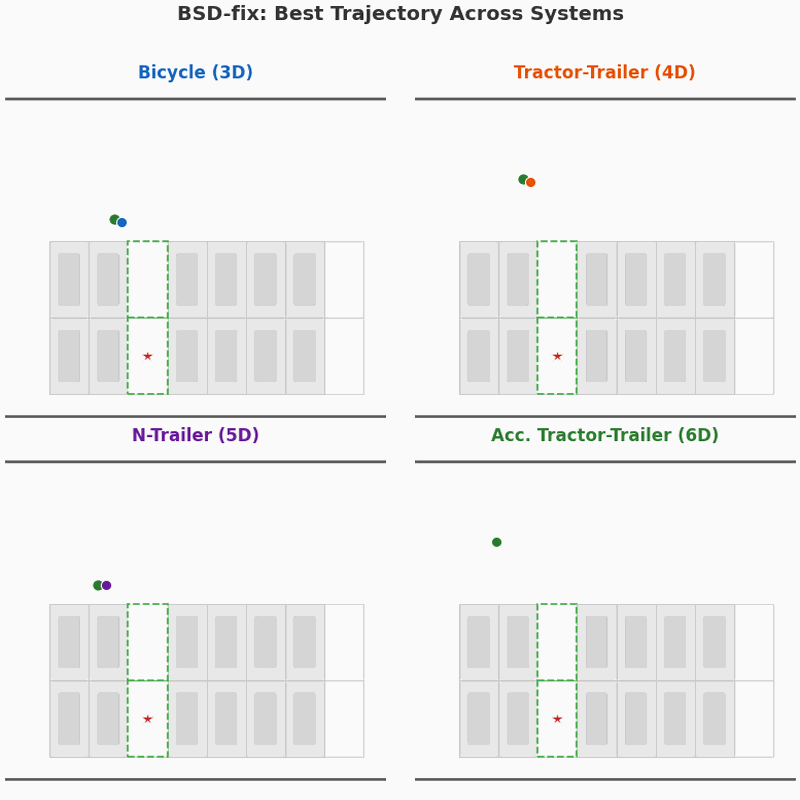
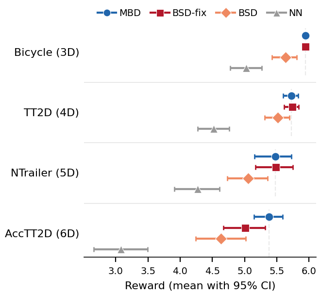
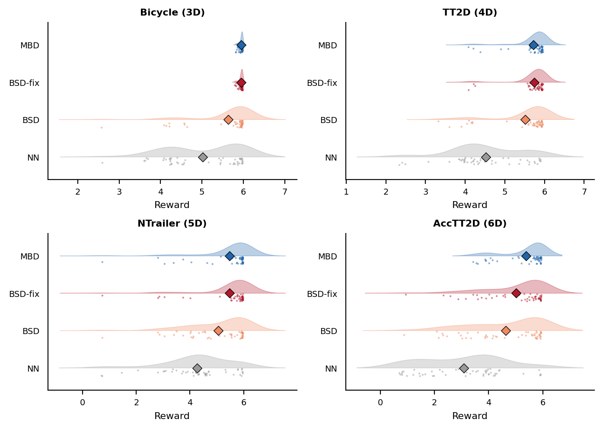
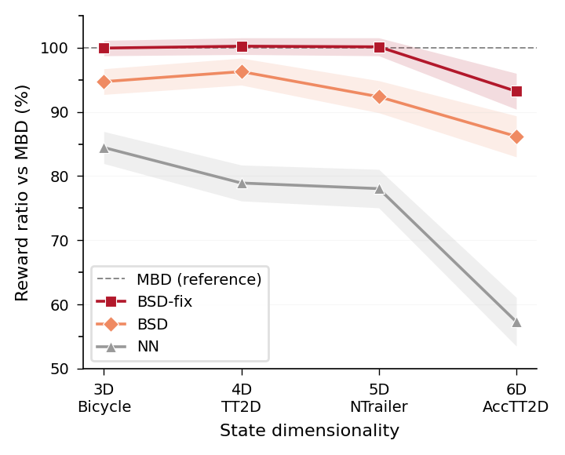
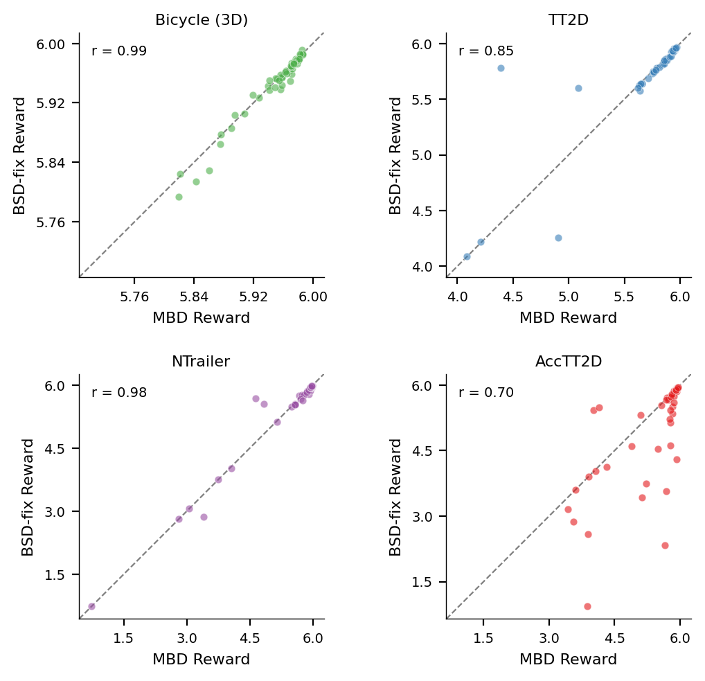
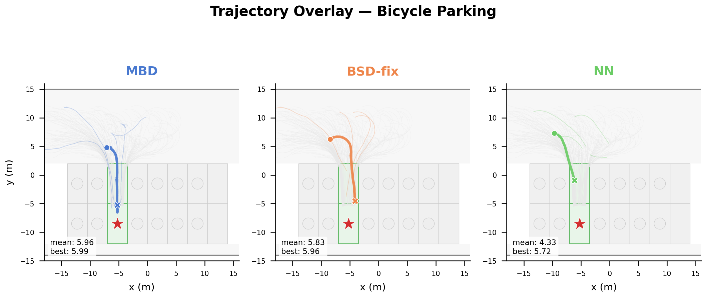
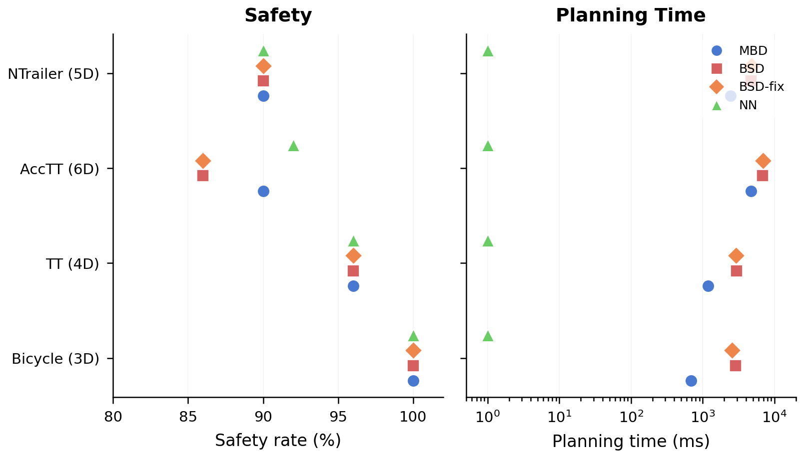

Diffusion-based trajectory optimization has emerged as a powerful planning paradigm, but existing methods require either learned score networks trained on large datasets or analytical dynamics models for score computation. We introduce Behavioral Score Diffusion (BSD), a training-free and model-free trajectory planner that computes the diffusion score function directly from a library of trajectory data via kernel-weighted estimation.
At each denoising step, BSD retrieves relevant trajectories using a triple-kernel weighting scheme—diffusion proximity, state context, and goal relevance—and computes a Nadaraya-Watson estimate of the denoised trajectory. The diffusion noise schedule naturally controls kernel bandwidths, creating a multi-scale nonparametric regression: broad averaging of global behavioral patterns at high noise, fine-grained local interpolation at low noise. Safety is preserved by applying shielded rollout on kernel-estimated state trajectories.
We prove pointwise consistency of the kernel score estimate for arbitrary continuous dynamics, characterize its MSE rate, and establish formal equivalence to regularized DeePC for LTI systems. Empirically, BSD achieves 98.5% of the model-based baseline's average reward across four robotic systems (3D–6D state spaces) using only 1,000 pre-collected trajectories, and substantially outperforms nearest-neighbor retrieval (18–63% improvement).
BSD replaces Model-Based Diffusion's dynamics rollout with a kernel regression over stored trajectory data. At each denoising step i, given a noisy trajectory Yi, BSD computes kernel weights over the dataset using three kernels:
The denoised trajectory is then a Nadaraya-Watson weighted average of stored trajectories. This creates a natural multi-scale structure: at high noise (early denoising), broad kernels average over diverse trajectories capturing global behavioral patterns; at low noise (late denoising), narrow kernels interpolate locally between nearby trajectories. A multi-sample selection mechanism with K = 20,000 candidates and reward-weighted softmax handles exploitation.
Safety shielding from Safe-MPD transfers directly: the shield operates on kernel-estimated states identically to dynamics-predicted ones. We prove this formally (Proposition 4: Safety Inheritance).
BSD iteratively refines a noisy trajectory into a goal-reaching parking maneuver. At early steps (high noise), kernel weights average broadly over the trajectory dataset; at late steps (low noise), weights concentrate on nearby high-quality trajectories.

Bicycle system: 100 denoising steps, 1,000 stored trajectories
Side-by-side comparison of planned trajectories on the Bicycle parking task. MBD (model-based) and BSD-fix (ours, data-only) produce smooth, direct paths to the target space. NN (nearest-neighbor, no diffusion) retrieves stored trajectories without refinement, yielding less directed paths.

BSD-fix generalizes across four vehicle systems of increasing state dimensionality (3D–6D), producing smooth parking trajectories from data alone on each system.







We establish four formal results for BSD's kernel-based score estimation:
@inproceedings{bsd2026,
title = {Behavioral Score Diffusion: Model-Free Trajectory Planning
via Kernel-Based Score Estimation from Data},
author = {Li, Shihao and Li, Jiachen and Xu, Jiamin and Chen, Dongmei},
booktitle = {IEEE Conference on Decision and Control (CDC)},
year = {2026},
}